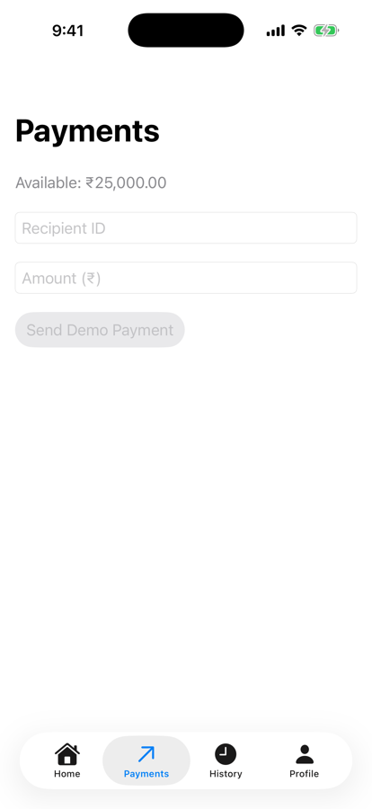
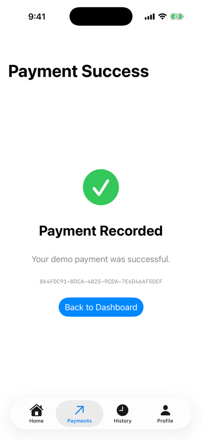

Part 1 · The engineering requirement (section 1)
From one stack to four sections
Today
- Dashboard → Send Money, History
- One navigation stack
Wanted
- Home, Payments, History, Profile
- Always one tap away
- Top-level sections, not pushed screens

3.2: one stack

Home

Payments

History

Profile
Part 2 · What exactly is TabView? (section 2)
Two children, one tab bar
TabExperiment.swift
struct TabExperiment: View {
var body: some View {
TabView {
Text("Home Screen")
.tabItem { Label("Home", systemImage: "house") }
Text("History Screen")
.tabItem { Label("History", systemImage: "clock") }
}
}
}| API | Responsibility |
|---|---|
TabView | hosts selectable tab content |
.tabItem | provides the tab’s label and icon |
Label | combines text and a symbol |
| Selected tab | decides which content is active |

Launch: Home

History selected
Part 7 · Payments tab: record, then route (complete code)
The store records; the router navigates
Screens/PaymentsScreen.swift (button)
Button("Send Demo Payment") {
guard let amount = parsedAmount else { return }
if let id = store.recordDemoPayment(
recipient: recipient, amountPaise: amount) {
focusedField = nil
recipient = ""
amountText = ""
router.showPaymentSuccess(id)
}
}Router state, simulator
paymentsPath: [paymentSuccess(CB81C78F…)]
Back to Dashboard → selectedTab: home, paymentsPath: []

Payments tab

Success, same tab

Home: ₹23,499.50
Part 7 · History → transaction details (complete code)
A value link appends to the History path
Screens/HistoryScreen.swift
struct HistoryScreen: View {
let transactions: [Transaction]
var body: some View {
List(transactions) { transaction in
NavigationLink(value: NPayRoute.transactionDetails(transaction.id)) {
TransactionRow(transaction: transaction)
}
}
.navigationTitle("History")
}
}NavigationLink(value:)- A link that carries a route, not a view
- Tapping appends it to the enclosing stack’s path
History tab

Transaction
Part 7 · Verify these five behaviors (complete code)
Five checks, all run
| Check | Simulator |
|---|---|
| 1. Switch Home, Payments, History, Profile | all four, tab bar always visible |
| 2. Send a demo payment of ₹1,500.50 | Payment Recorded, in the Payments tab |
| 3. Updated balance | ₹23,499.50 on Home |
| 4. History → select the transaction | Sent to ravi@npay, -₹1,500.50 |
| 5. Back to Home: shared state kept | ₹23,499.50, Sent to ravi@npay on top |
The text’s ZIP was not shared; this is the authored complete code in the lesson text file.
Profile

Profile → Settings